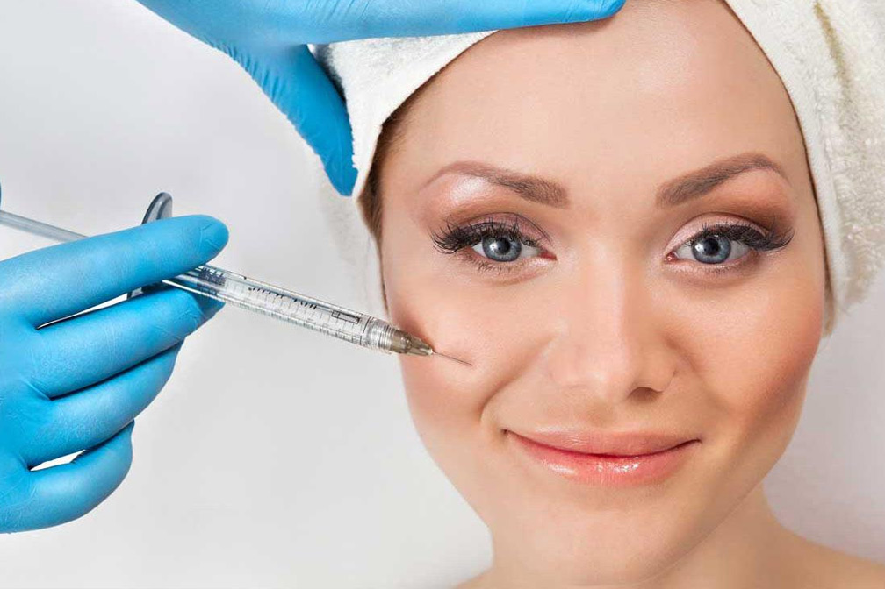

Биоревитализация

Биоревитализация — это методика омоложения кожи при помощи инъекций гиалуроновой кислоты. Она обеспечивает эффект увлажнения, разглаживания морщин и повышения тургора кожи.
Процедура биоревитализации помогает клеткам кожи начать работать в «молодом» режиме, запускаются процессы обновления и регенерации, усиливается синтез коллагена, в результате кожа становится более подтянутой и здоровой.
- Время процедуры: 30-60 минут
- Анестезия по желанию
- Видимый эффект через 3-10 дней
- Реабилитация 1-2 дня, риск микрогематом
- Длительность эффекта от 6 месяцев
- Курс 3 – 5 процедур с интервалом 2 – 4 недели
- Курс проводить 1 раз в год
- Стоимость от 4500 руб
В L.R. CLINIC используются только надежные сертифицированные препараты. В зависимости от ваших пожеланий и поставленных задач наши опытные высококвалифицированные специалисты подберут наиболее подходящий для вас препарат и назначат курс терапии.
У нас большой выбор биоревитализантов с различной концентрацией гиалуроновой кислоты, а также биорепарантов, содержащих аминокислоты, пептиды, антиоксиданты, микроэлементы. Обогащенные препараты позволяют дополнительно воздействовать на другие звенья механизма старения, тем самым улучшить цвет лица, повысить ее тонус и добиться лифтингового эффекта и уменьшения выраженности морщин и складок.
Показания
Биоревитализацию рекомендуется проводить регулярно с 25-30 лет.
Процедура показана и для омоложения женщин в возрасте, и для профилактики и повышения защитных свойств кожи у молодых пациенток, особенно до и после воздействия ультрафиолета (естественный загар, солярий).
Записывайтесь на процедуру, если Вас волнует:
- тусклый, серый цвет лица
- склонная к сухости, обезвоженная кожа
- снижение эластичности и упругости кожи
- мелкие морщины на лице, шее, в зоне декольте
- жирная, грубая кожа с расширенными порами
- купероз
- гиперпигментация
- ранние возрастные изменения вследствие стрессов, вредных привычек и воздействия ультрафиолета
- подготовка кожи и реабилитация после лазерных процедур, активных пилингов, дермабразии
Зоны коррекции
- лицо
- шея
- декольте
- кисти рук
- при необходимости биоревитализация может быть выполнена на любой области тела, включая кожу интимной зоны, живота, локтей, коленей
- все более популярна биоревитализация губ, позволяющая восстановить их цвет и сочность без увеличения объема
Достоинства процедуры
- Эффективность
- Безопасность
- Быстрый видимый результат
- Безболезненность (после анестезирующего крема вы практически не почувствуете инъекций)
- Короткий реабилитационный период
- Длительный результат
- Прекрасно сочетается с другими способами омоложения кожи:
- пилинги
- мезонити
- аппаратные процедуры (в особенности лазерное омоложение, RF- лифтинг, фототерапия)
- контурная пластика
- уходовые процедуры
- Процедуры взаимоусиливают эффект друг друга
- Мгновенное глубокое увлажнение кожи, свежий цвет лица и разглаживание мелких морщин уже после первой процедуры!
Результаты
- мгновенное глубокое увлажнение кожи
- разглаживаются мелкие морщины на лице, шее, в зоне декольте
- подтягивается овал лица
- кожа приобретает упругость
- улучшается цвет кожи, уменьшается гиперпигментации
- сужаются поры, нормализуется работа сальных желез
- выравнивается рельеф кожи
- кожа приобретает здоровый, свежий вид
Рекомендации до и после процедуры биоревитализации:
Перед процедурой биоревитализации никаких определенных ограничений нет, однако, за неделю до процедуры, рекомендуется избегать применения аспирина и других обезболивающих НПВС.
Проведенные процедуры поверхностного пилинга, фотобиомодуляция усилят эффект полученный от биоревитализации.
-
После процедуры:
- пользоваться декоративной косметикой разрешается через 12 часов
- в течение 5-7 дней рекомендуется избегать посещения сауны, бани, бассейна, солярия и воздействия прямых солнечных лучей
Врач обязательно подробно проконсультирует Вас о том, как ухаживать за кожей дома после процедуры
Противопоказания
- Индивидуальная непереносимость компонентов препарата
- Вирусные, инфекционные заболевания кожи
- Беременность, период лактации
- Аутоиммунные заболевания
- Острые инфекционные заболевания
- Хронические заболевания в стадии обострения
- Склонность к образованию келоидных рубцов
Почему вам стоит обратиться именно к нам?
- У нас работают опытные квалифицированные специалисты
- В работе мы используем только надежные сертифицированные препараты
- Лечение подбирается индивидуально с учетом целей, состояния кожи и особенностей здоровья пациента
У нас имеются более легкие препараты для молодой кожи и более плотные для возрастной, содержащие как чистую, так и обогащенную гиалуроновую кислоту (в составе также антиоксиданты, микроэлементы, аминокислоты).
Обогащенные препараты хорошо использовать для дополнительного воздействия на другие звенья механизма старения, они позволяют улучшить цвет лица, повысить ее тонус и добиться лифтингового эффекта и уменьшения выраженности морщин и складок.
Квалифицированные специалисты L.R.Clinic вернут вашему лицу молодость и красоту.
Записывайтесь на процедуру по телефону: +7(927)433-33-53, или с помощью виджета ОНЛАЙН-ЗАПИСИ в правом нижнем углу экрана!